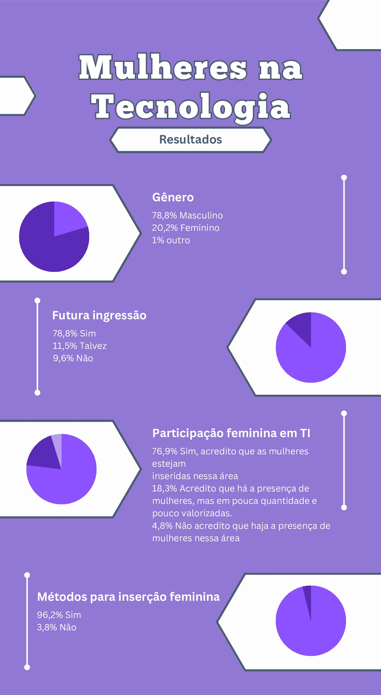

O Crescimento Imparável: O Papel das Mulheres no Mundo da Tecnologia
A ascensão notável das mulheres no setor de Tecnologia da Informação: Quais as razões do aumento crescente da participação feminina no curso de Informática?
29/08/2023 09h37 • Atualizado às 14h28

Imagem: Freepik/Acervo
No coração da indústria de Tecnologia da Informação (TI), um movimento empolgante e revolucionário está em andamento. Mulheres estão conquistando posições de destaque e liderança, rompendo barreiras e desempenhando um papel vital na definição do futuro tecnológico. Em um campo tradicionalmente dominado por homens, a crescente presença feminina está não apenas quebrando estereótipos, mas também impulsionando a inovação de maneiras surpreendentes.
À medida que mais mulheres se lançam na TI, elas trazem consigo uma diversidade de experiências e perspectivas que enriquecem a colaboração e a solução de problemas. Além disso, suas realizações estão se transformando em referências inspiradoras para as gerações futuras, demonstrando que não há limites para o que as mulheres podem alcançar no mundo tecnológico. Esse movimento, moldado por contribuições individuais e coletivas, está redefinindo o cenário da indústria e pavimentando um caminho inovador rumo ao amanhã.
Imagem: Freepik/Acervo
A Luta pelo Reconhecimento
A trajetória das mulheres no campo da Tecnologia da Informação é uma saga marcada por desafios intransigentes, mesmo tendo mentes femininas marcantes na história da tecnologia como Ada Lovelace, que foi uma das principais pioneiras, escrevendo o primeiro algoritmo a ser processado por uma máquina, toda essa relação histórica é pouco notada comparada com grandes nomes masculinos da indústria de programação.
Desde os primórdios até os dias atuais, elas têm enfrentado obstáculos consideráveis, incluindo discriminação de gênero, representatividade insuficiente e preconceitos arraigados. Um estudo liderado por Castro em 2011 revelou que apenas 19% dos profissionais atuantes na área de Tecnologia da Informação eram mulheres. Apesar da crescente demanda por profissionais nesse setor, a expectativa de aumento da participação feminina ao longo dos anos tem esbarrado em desafios como disparidades salariais, com remunerações cerca de 30% menores do que as dos homens na mesma área (conforme dados do PNAD 2009), bem como em estereótipos profundamente enraizados na sociedade. Esses problemas têm limitado o ritmo do progresso das mulheres nas últimas décadas.
No entanto, à medida que as mentalidades evoluíram, a determinação e dedicação das mulheres à tecnologia começaram a ganhar visibilidade. As pioneiras abriram caminho, desafiando as normas estabelecidas e pavimentando a estrada para as gerações seguintes.
A Mudança de Paradigma
À medida que a indústria de tecnologia da informação reconheceu o potencial ainda não explorado das mentes femininas, testemunhamos uma verdadeira mudança de paradigma. Programadoras, engenheiras, cientistas de dados e especialistas em cibersegurança passaram a moldar o cenário tecnológico de maneira inédita. As empresas começaram a abraçar a importância da diversidade, compreendendo que equipes heterogêneas resultam em soluções mais criativas e abrangentes.
Essa mudança tem incentivado as gerações mais recentes de mulheres a permanecerem e prosperarem no campo da tecnologia. Um exemplo disso é uma pesquisa recente realizada com estudantes do curso de Informática para a Internet em nosso campus. Dos 82 questionários respondidos por mulheres, 78 expressaram o desejo definitivo de seguir carreira na área, enquanto outras 4 indicaram estar considerando essa possibilidade, totalizando uma porcentagem de 78,8% das participantes. Esse cenário demonstra claramente que as mulheres estão cada vez mais motivadas a continuar contribuindo e se destacando nesse campo, graças ao ambiente mais inclusivo e às perspectivas de carreira promissoras que estão se desenhando.
A colaboração multidisciplinar, alimentada por perspectivas diversas, tem gerado inovações mais robustas. À medida que mais mulheres assumem papéis participativos, é perceptível uma transformação na cultura das empresas. A inclusão de vozes femininas não só promove uma maior representatividade no setor, mas também impulsiona uma mudança de mentalidade, criando ambientes de trabalho mais inclusivos e abertos à criatividade. Esse novo dinamismo está rapidamente se tornando uma das forças propulsoras da transformação tecnológica.
Imagem: Freepik/Acervo
Inspirando a Próxima Geração
À medida que mais mulheres brilham na TI, a visibilidade delas como modelos a seguir torna-se crucial. Iniciativas educacionais surgiram para encorajar meninas desde cedo a se interessarem por STEM (Ciência, Tecnologia, Engenharia e Matemática). Programas de mentorias conectam aspirantes a profissionais estabelecidos, fornecendo orientação e apoio necessários. A narrativa em torno das carreiras de TI também está mudando, mostrando histórias inspiradoras de mulheres que superaram obstáculos e triunfaram.
Conforme esses programas de mentorias e iniciativas de empoderamento se expandem, um efeito de cascata inspirador se torna evidente. À medida que jovens mulheres são expostas a modelos de sucesso, elas começam a vislumbrar possibilidades anteriormente inexploradas. A conscientização sobre o potencial das carreiras em TI desde a juventude não apenas nutre o interesse das meninas, mas também garante um pipeline ( sequência de etapas pelas quais os candidatos ao emprego passam) mais diversificado e sustentável de talentos para o futuro.
Leia também
Transformando Setores e Impulsionando Inovação
O impacto das mulheres na TI vai além dos códigos e algoritmos. Setores inteiros estão sendo transformados por soluções criativas e disruptivas lideradas por mulheres. Da saúde à sustentabilidade, da educação à automação, a influência feminina é onipresente. A diversidade de pensamento resultante da inclusão de mais mulheres impulsiona a inovação, levando a avanços que beneficiam a sociedade como um todo.
Apesar de todo o progresso, desafios contemporâneos persistem. Disparidades salariais, falta de representação em cargos de liderança e o equilíbrio entre vida profissional e pessoal continuam sendo questões importantes. No entanto, a resiliência demonstrada pelas mulheres na TI até agora inspira confiança em um futuro mais igualitário e inclusivo. Investir em oportunidades de desenvolvimento, promover políticas corporativas equitativas e continuar celebrando as conquistas femininas são passos cruciais para o caminho à frente.
Essa influência feminina não está confinada apenas ao âmbito tecnológico. As inovações lideradas por mulheres estão interconectando disciplinas, gerando respostas surpreendentes para os desafios globais. Por exemplo, a aplicação da inteligência artificial em áreas como a saúde tem sido revolucionária. Soluções de diagnóstico mais precisas e tratamentos personalizados são resultados diretos dessa abordagem interdisciplinar, em que as contribuições das mulheres têm se destacado. Essas mudanças transcendentais estão remodelando não apenas as indústrias, mas também o futuro de nossa sociedade.
Você sente que tem alguma diferenciação de tratamento na área por você ser mulher?
"A gente vive numa sociedade machista, e vê muito isso nessa área [de informática], não necessariamente por ser de informática, mas por que a sociedade ainda está no sistema patriarcal e ainda há muito preconceito por parte das pessoas", diz Caroline Guterres, professora da rede pública de ensino tecnológico.
Além disso, Luiza Barão, ex-aluna do curso técnico em informática, conta que optou por não seguir nessa área por se sentir oprimida e insegura em relação a futura empregabilidade na área. Problemas como esse são mais comuns do que imaginamos na sociedade atual.
Nesse contexto, foi realizada uma pesquisa entre os alunos e ex-alunos do técnico em informática do Instituto Federal Catarinense. Esta pesquisa teve como intuito levantar dados sobre a inserção e participação feminina da área de informática, além de requisitar sugestões para essa possível ação.
Foram recebidas 104 respostas, sendo 78,8% do gênero feminino e 20,2% do masculino. Dentre os resultados, 78,8% dos alunos pretendem ou estão situados na área da tecnologia da informação (TI), 11,5% talvez seguirão na formação e os demais 9,6% não têm interesse. Em relação à participação ativa de mulheres na TI, 76,9% dos respondentes acreditam que há a presença feminina, mas em pouca quantidade e com baixa valorização, outros 18,3% dizem que as mulheres estão inseridas e o restante formado por 4,8% dizem não haver esse cenário. Por conseguinte, 96,2% são a favor de haver métodos para a inserção das mesmas nesse espaço e apenas 3,8% são contra.
Ao final da pesquisa, foram requisitadas sugestões de métodos utilizáveis para resolver esse impasse, dentre as respostas recebidas estão: salário igualitário para ambos os gêneros, realização de palestras e projetos com mulheres profissionais na área, criação de uma possível nova cota, workshops, conferências e hackathons focados em atrair e capacitar mulheres na área de TI, programas de mentoria que conectem mulheres experientes com jovens aspirantes, para fornecer orientação, suporte e conselhos práticos, além de introduzir programação e TI no currículo escolar.
Levantamento final
À medida que o mundo da TI continua a se expandir e evoluir, a presença e a influência das mulheres estão moldando a narrativa de maneira inédita. O papel delas vai muito além do desenvolvimento tecnológico; elas estão redefinindo a própria cultura da indústria. À medida que mais mulheres se lançam nesse campo, é essencial manter o ímpeto, superar desafios e continuar promovendo a igualdade de oportunidades.